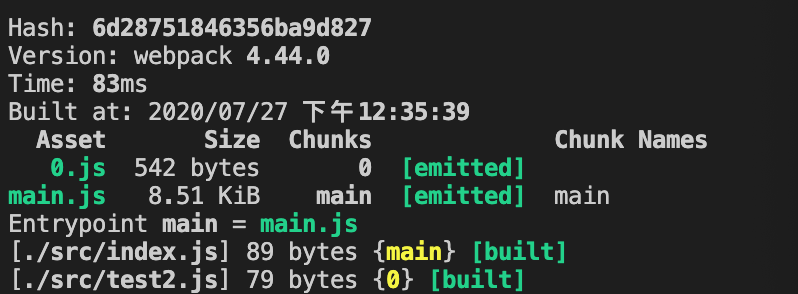

webpack4
文件指纹区别
Hash:和整个项目目的构建相关，只要项目目文文件有修改，整个项目目构建的 hash 值就会更更改 Chunkhash :和 webpack 打包的 chunk 有关，不同的 entry 会生生成不不同的 chunkhash 值 Contenthash:根据文文件内容来定义 hash ，文文件内容不不变，则 contenthash 不变
watch原理
webpack中watch的原理是利用轮询，判断文件最后编辑时间是否改变，某个文件发生改变，并不会立即通知，而是缓存起来，汇总得到轮询在一起返回。
原理
webpack实现了commonjs规范，commonjs是node的模块化，而commonjs是同步阻塞式加载，为了实现commonjs规范，，webpack封装了自己的模块化，把所有模块和模块之间的依赖都展平，并以key：value都形式将模块展平后的对象传给一个闭包函数。
(function(modules) { // webpackBootstrap
// The module cache
// 缓存模块
var installedModules = {};
// The require function
function __webpack_require__(moduleId) {
// Check if module is in cache
// 检查缓存模块，分析过的模块做混存
if(installedModules[moduleId]) {
return installedModules[moduleId].exports;
}
// Create a new module (and put it into the cache)
// 构建新的模块化规范
// installedModules {
// [moduleId]: {
// exports: {
// },
// i: moduleId,
// l: false
// }
// }
var module = installedModules[moduleId] = {
i: moduleId,
l: false,
exports: {}
};
// Execute the module function
// 函数执行，绑定this
// module，module.exports, __webpack_require__作为参数形式传递给函数
modules[moduleId].call(module.exports, module, module.exports, __webpack_require__);
// Flag the module as loaded
// 标记模块已经加载完毕
module.l = true;
// Return the exports of the module
return module.exports;
}
// expose the modules object (__webpack_modules__)
__webpack_require__.m = modules;
// expose the module cache
__webpack_require__.c = installedModules;
// define getter function for harmony exports
__webpack_require__.d = function(exports, name, getter) {
if(!__webpack_require__.o(exports, name)) {
Object.defineProperty(exports, name, { enumerable: true, get: getter });
}
};
// define __esModule on exports
__webpack_require__.r = function(exports) {
if(typeof Symbol !== 'undefined' && Symbol.toStringTag) {
Object.defineProperty(exports, Symbol.toStringTag, { value: 'Module' });
}
Object.defineProperty(exports, '__esModule', { value: true });
};
// create a fake namespace object
// mode & 1: value is a module id, require it
// mode & 2: merge all properties of value into the ns
// mode & 4: return value when already ns object
// mode & 8|1: behave like require
__webpack_require__.t = function(value, mode) {
if(mode & 1) value = __webpack_require__(value);
if(mode & 8) return value;
if((mode & 4) && typeof value === 'object' && value && value.__esModule) return value;
var ns = Object.create(null);
__webpack_require__.r(ns);
Object.defineProperty(ns, 'default', { enumerable: true, value: value });
if(mode & 2 && typeof value != 'string') for(var key in value) __webpack_require__.d(ns, key, function(key) { return value[key]; }.bind(null, key));
return ns;
};
// getDefaultExport function for compatibility with non-harmony modules
__webpack_require__.n = function(module) {
var getter = module && module.__esModule ?
function getDefault() { return module['default']; } :
function getModuleExports() { return module; };
__webpack_require__.d(getter, 'a', getter);
return getter;
};
// Object.prototype.hasOwnProperty.call
__webpack_require__.o = function(object, property) { return Object.prototype.hasOwnProperty.call(object, property); };
// __webpack_public_path__
__webpack_require__.p = "";
// Load entry module and return exports
return __webpack_require__(__webpack_require__.s = "./src/index.js");
})
/************************************************************************/
({
"./src/index.js": (function(module, exports) {
const result = "webpack4"//# sourceURL=webpack:///./src/index.js?;
})
});
动态加载，按需加载
import('./test.js').then(result => {
···
})
最终test.js会作为额外的chunk独立打包出来，默认的命名按数字递增，0.js

原理： 异步模块会在维护一个webpackJsonp队列，将模块chunkname和模块内容保存到队列中。
（window["webpackjsonp"].push([0], {
"./src/test.js": (function(module, __webpack_exports__, __webpack_require__) {
···
})
})
主模块通过__webpack_require__.e(0).then()的方式引入异步模块，e函数的实现逻辑就是动态插入script标签
__webpack_require__.e = function requireEnsure(chunkId) {
var promises = [];
// JSONP chunk loading for javascript
var installedChunkData = installedChunks[chunkId];
if(installedChunkData !== 0) { // 0 means "already installed".
// a Promise means "currently loading".
if(installedChunkData) {
promises.push(installedChunkData[2]);
} else {
// setup Promise in chunk cache
var promise = new Promise(function(resolve, reject) {
installedChunkData = installedChunks[chunkId] = [resolve, reject];
});
promises.push(installedChunkData[2] = promise);
// start chunk loading
var script = document.createElement('script');
var onScriptComplete;
script.charset = 'utf-8';
script.timeout = 120;
if (__webpack_require__.nc) {
script.setAttribute("nonce", __webpack_require__.nc);
}
script.src = jsonpScriptSrc(chunkId);
// create error before stack unwound to get useful stacktrace later
var error = new Error();
onScriptComplete = function (event) {
// avoid mem leaks in IE.
script.onerror = script.onload = null;
clearTimeout(timeout);
var chunk = installedChunks[chunkId];
if(chunk !== 0) {
if(chunk) {
var errorType = event && (event.type === 'load' ? 'missing' : event.type);
var realSrc = event && event.target && event.target.src;
error.message = 'Loading chunk ' + chunkId + ' failed.\n(' + errorType + ': ' + realSrc + ')';
error.name = 'ChunkLoadError';
error.type = errorType;
error.request = realSrc;
chunk[1](error);
}
installedChunks[chunkId] = undefined;
}
};
var timeout = setTimeout(function(){
onScriptComplete({ type: 'timeout', target: script });
}, 120000);
script.onerror = script.onload = onScriptComplete;
document.head.appendChild(script);
}
}
return Promise.all(promises);
};
问题： 异步模块是webpack自身内部维护的模块，chunk的名称0，1，2只能被主模块识别和维护，这导致无法不同项目中共享模块。 webpack4的解决方式：加入webpackChunkName, 但是这依然存在问题，命名容易出现冲突，特别是多团队不好管理。
import(/*webpackChunkName:"test"*/'./index.js').then(_ => {
})
webpack5新特性
- 速度快
- 自身会带各种插件功能，不需要依赖第三方插件
- 脱离cache loader, 自身完成缓存
- 深度tree-shaking webpack4 需要安装插件 类似prepack
- 模块化 -> 微前端
webpack 分阶段 => 生命周期
控制整个构建流程的阶段 => compiler 对应阶段 => call => tap() => 要做的事情
负责不同的阶段，把不同阶段生命周期的狗子挂载到身上
初始化所有插件， 把不同阶段要做的事情，添加到对饮更多钩子里面
到不同阶段的时候，出发对应的插件钩子，调用对应的逻辑
编译代码 => compiltion
- 编译runloader
- ast => addModule
dependency
{ name: 'a.js', code: '', dep: [], ast: '' }- 基于基础模板，构建模板，遍历依赖
- 生成文件